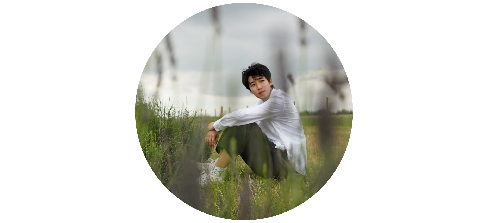

architect / visual & sound designer / creative coder
An inquisitive designer wandering across architecture, installation and new media art. A humble perfectionist and an inspirational cooperator.
I am interested in the monumentality and interactivity of architecture, and try to discover an installation-based methodology of architectural design. In the master courses, my researches are focused on interactive spaces and soundscape design, through which I get to explore the temporal dimension of our built enviroment and how humans perceive the ambience by their senses. In my perspective, interdisciplinary views are important for designers to recognize the different traits of a space.
In the process of interdisciplinary study, I acquired a wide range of skills in 3D modelling, graphical processing, audio editting and programming. Among these, I take programming as a core tool to logicalize the design and probe the potential beyond huamn brain. The poetries of modernity will be composed through the novel techniques in this new era.